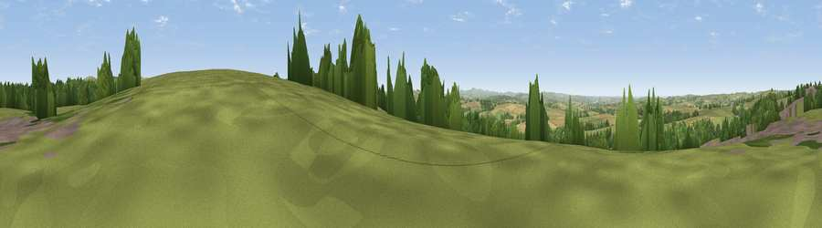

Viewpoint near St. Breward
#8287 in England · top 19% of its area beats it · near St. BrewardWhere it is
The exact computed spot (SX 09712 76150). Click the marker for map links.
The view, rendered

A 360° render of this exact spot computed from the terrain model, tree cover and land cover — summer colours, afternoon light, calibrated against photographs of famous viewpoints. Real trees, hedges and buildings will differ in detail.
The panorama
Grey silhouette: terrain skyline in each direction (720 bearings, Earth curvature and refraction included). Dashed green: skyline with trees (+15 m) and buildings (+8 m) as obstacles. Blue strip: how far the ground is visible on each bearing.
Where the view opens
Wedge length = distance to the farthest visible ground on that bearing (vegetation-aware). Rings at 10, 25 and 50 km.
What fills the view
54% grassland · 33% woodland · 12% cropland · 1% built-up
Angular shares of the visible panorama (visual magnitude), not map area. Landscape diversity 0.44 (0–1 Shannon).
Key numbers
More beautiful places nearby
The staircase of upgrades: each row has a higher view potential than everything closer. Driving times are estimates from straight-line distance, calibrated against real road routing — check an actual route before setting out.
| Place | Direction | Drive | Score |
|---|---|---|---|
| Viewpoint near Blisland | SSE · 2 km | ~6 min | 67.0 |
| Viewpoint near Michaelstow | NNW · 4 km | ~9 min | 72.5 |
| Rough Tor | NE · 7 km | ~14 min | 76.5 |
| Brown Willy | NE · 7 km | ~15 min | 77.3 |
| Viewpoint near Port Isaac | WNW · 8 km | ~16 min | 79.7 |
| Viewpoint near Boscastle | N · 13 km | ~24 min | 82.0 |
| Viewpoint near Boscastle | N · 13 km | ~24 min | 84.3 |
| Viewpoint near Boscastle | N · 14 km | ~25 min | 85.2 |
50.55406, -4.68763 · source: screening · position refined by local search. Computed location — check access rights before visiting.